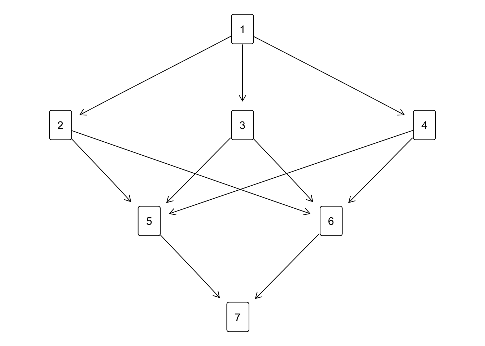

Write the tied-down cubic in the form \(f(x)=ax(x^2+2bx+c)\). Since we must have \(f(x)\rightarrow+\infty\) of \(x\rightarrow+\infty\) we have \(a>0\). Since \(f\) must be increasing at zero, we must have \(f'(0)=c>0\). No real roots on the positive reals. Case 1: no real roots at all \(b^2-c<0\). Case 2: two real roots, both negative \(b^2-c\geq 0\) and \(b\geq 0\). Since \(c>0\) the product of roots is positive. If the sum is negative, i.e. if \(b>0\) both roots are negative. Since \(f''(x)=6x+b\) we see that \(f\) is convex on the positive real axis if \(b\geq 0\).
9.3.2 A QP Algorithm
In this section we construct an algorithm for a general weighted linear least squares projection problem with equality and/or inequality constraints. It uses duality and unweighting majorization. The section takes the form of a small diversion, with examples. This may seem somewhat excessive, but it provides an easy reference for both you and me and it serves as a manual for the corresponding R code.
We start with the primal problem, say problem \(\mathcal{P}\), which is minimizing
over all \(x\) satisfying equalities \(Ax\geq b\) and equations \(Cx=d\). We suppose the Slater condition is satisfied, i.e. there is an \(x\) such that \(Ax>b\). And, in addition, we suppose the system of inequalities and equations is consistent, i.e. has at least one solution.
We first reduce the primal problem to a simpler, and usually smaller, one by partitioning the loss function. Define
The simplified primal problem \(\mathcal{P}'\) is to minimize \((x-y)'W(x-y)\) over \(Ax\geq b\) and \(Cx=d\), where \(W\) is assumed to be positive definite. Obviously the solutions to \(\mathcal{P}\) and \(\mathcal{P}'\) are the same. The two loss function values only differ by the constant term \(y'Q'VQy\).
We do not solve \(\mathcal{P}'\) drectly, but we use Lagrangian duality and solve the dual quadratic programmng problem. The Lagrangian for \(\mathcal{P}'\) is
Our strategy is to solve \(\mathcal{D'}\) for \(\lambda\geq 0\) and/or \(\mu\). Because of our biases we do not maximize \(-g\), we minimize \(g\). Then compute the solution of both \(\mathcal{P}'\) and \(\mathcal{P}\) from @ref(eq:qpxsolve). The duality theorem for quadratic programming tells us the values of \(f\) at the optimum of \(\mathcal{P}'\) and \(-g\) at the optimum of \(\mathcal{D}'\) are equal, and of course the value at the optimum of \(\mathcal{P}\) is that of \(\mathcal{P}'\) plus the constant \(y'QVQy\).
From here on we can proceed with unweighting in various ways. We could, for instance, minimize out \(\mu\) and then unweight the resulting quadratic form. Instead, we go the easy way. Majorize the partitioned matrix \(K\) in the quadratic part of @ref(eq:qpdualf) by a similarly partitioned diagonal positive matrix \(E\).
Suppose \(\tilde\lambda\geq 0\) and \(\tilde\mu\) are the current best solutions of the dual problem. Put them on top of each other to define \(\tilde\gamma\), and do the same with \(\lambda\) and \(\mu\) to get \(\gamma\). Then \(g(\lambda,\mu)\) becomes
Because \(F\) is diagonal \(\lambda_i=\max(0,\xi_i)\) for \(i=1,\cdots m_1\) and and \(\mu_i=\xi_{i+m_1}\) for \(i=1,\cdots m_2\).
Section @ref(apcodemathadd) has the R code for qpmaj(). The defaults are set to do a simple isotone regression, but of course the function has a much larger scope. It can handle equality constraints, linear convexity constraints, partial orders, and much more general linear inequalities. It can fit polynomials, monotone polynomials, splnes, and monotone splines of various sorts. It is possible to have only inequality constraints, only equality constraints, or both. The matrix \(H\) of predictors in @ref(eq:qpbase) can either be there or not be there.
The function qpmaj() returns both \(x\) and \(\lambda\), and the values of \(\mathcal{P}\), \(\mathcal{P}'\), and \(\mathcal{D}'\). And also the predicted values\(Hx\), and the constraint values\(Ax-b\) and \(Cx-d\), if applicable. It’s always nice to check complimentary slackness\(\lambda'(Ax-b)=0\), and another check is provided because the values of \(\mathcal{P}'\) and \(\mathcal{D}'\) must be equal. Finally qpmaj() returns the number of iterations for the dual problem.
The function qpmaqj() does not have the pretense to compete in efficiency with the sophisticated pivoting and active set strategies for quadratic programming discussed for example by Best (2017). But it seems to do a reliable job on our small examples, and it is an interesting example of majorization and unweighting.
9.3.2.1 Example 1: Simple Monotone Regression
Here are the two simple monotone regression examples from section @ref(mathsimpiso), the first one without weights and the second one with a diagonal matrix of weights.
Now suppose the data have tie-blocks, which we indicate with \(\{1\}\leq\{2,3,4\}\leq\{5,6\}\leq\{7\}\). The Hasse diagram of the partial order (courtesy of Ciomek (2017)) is

In the primary approach to ties the inequality constraints \(Ax\geq 0\) are coded with \(A\) equal to
This is a silly example in which a vector \(y=\) 0.5855288, 0.709466, -0.1093033, -0.4534972, 0.6058875, -1.817956, 0.6300986, -0.2761841, -0.2841597, -0.919322 is “rounded” so that its elements are between \(-1\) and \(+1\). The weights \(V=W\) are a banded positive definite matrix.
a<-rbind(-diag(10),diag(10))b<-rep(-1, 20)w<-ifelse(outer(1:10,1:10,function(x,y) abs(x-y) <4), -1, 0)+7*diag(10)qpmaj(y, v = w, a = a, b = b)
This example has a matrix \(H\) with the monomials of degree \(1,2,3\) on the 20 points \(1,\cdots 20\). We want to fit a third-degree polynomial which is monotone, non-negative, and anchored at zero (which is why we do not have a monomial of degree zero, i.e. an intercept). Monotonicity is imposed by \((h_{i+1}-h_{i})'x\geq 0\) and non-negativity by \(h_1'x\geq 0\). Thus there are \(19+1\) inequality restrictions. For \(y\) we choose points on the quadratic curve \(y=x^2\), perturbed with random error.
We now want to accomplish more or less the same thing, but using a cubic of the form \(f(x)=x(c+bx+ax^2)\). Choosing \(a, b\) and \(c\) to be nonnegative guarantees monotonicity (and convexity) on the positive axis, with a root at zero. If \(b^2\geq 4ac\) then the cubic has two additional real roots, and by AM/GM we can guarantee this by \(b\geq a + c\). So \(a\geq 0\), \(c\geq 0\), and \(b\geq a+c\) are our three inequalities.
h <-cbind(1:20,(1:20)^2,(1:20)^3)a <-matrix(c(1,0,0,0,0,1,-1,1,-1), 3, 3, byrow =TRUE)plot(1:20, y)out<-qpmaj(y,a=a,h=h,verbose=FALSE,itmax=10000, eps =1e-15)lines(1:20,out$pred,type="l",lwd=3,col="RED")
The results of this alternative way of fitting the cubic are more or less indistinguishable from the earlier results, although this second approach is quite a bit faster (having only three inequalities instead of 21).